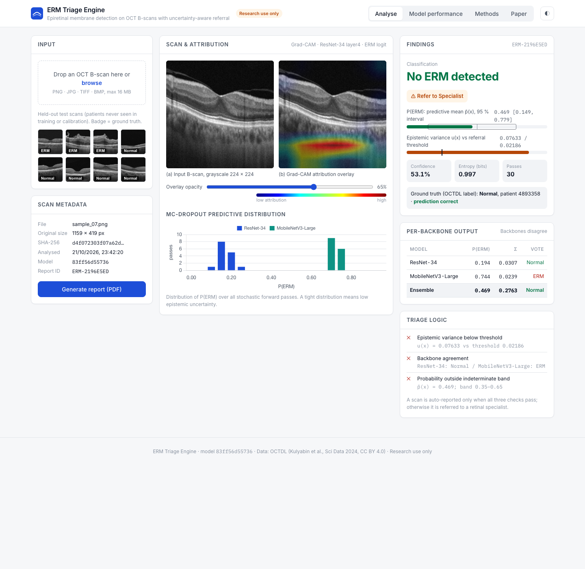
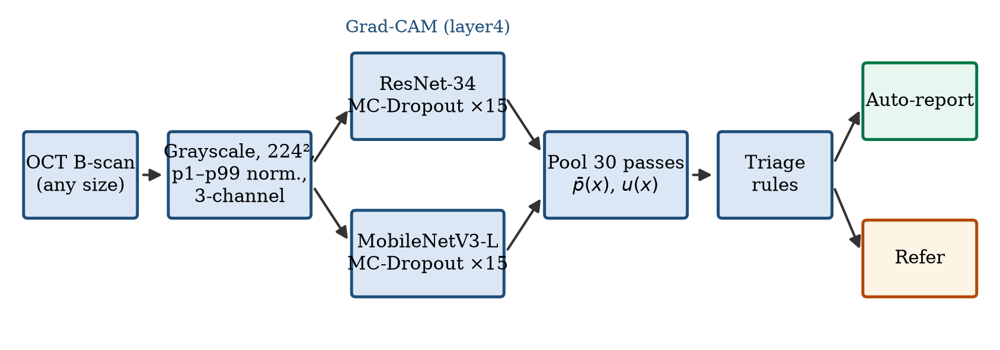
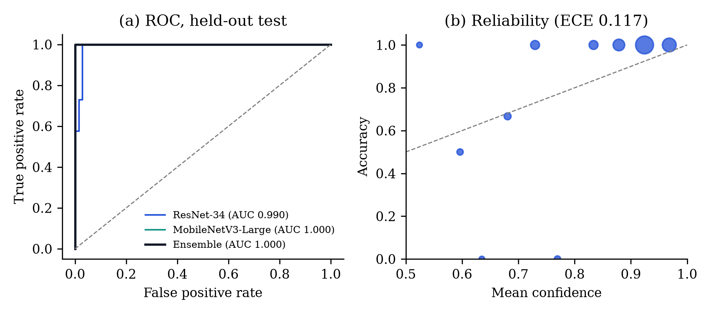
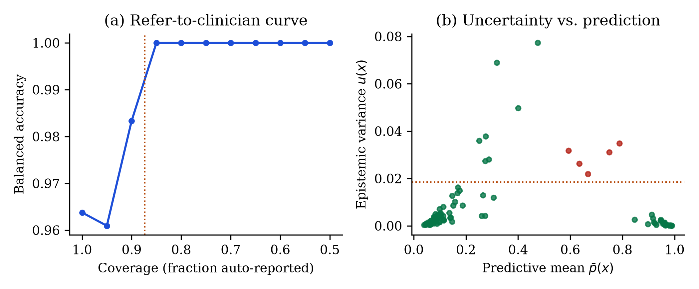
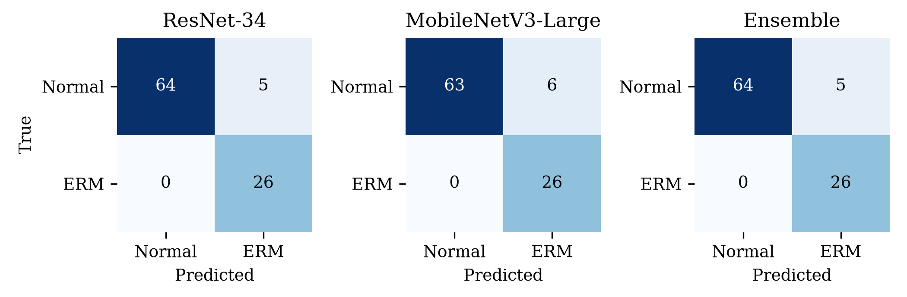
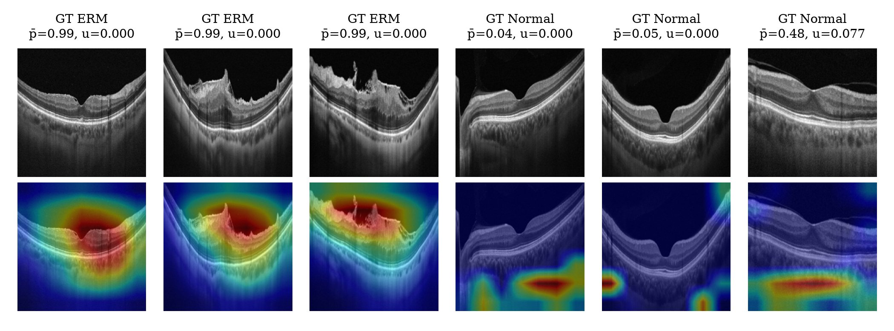
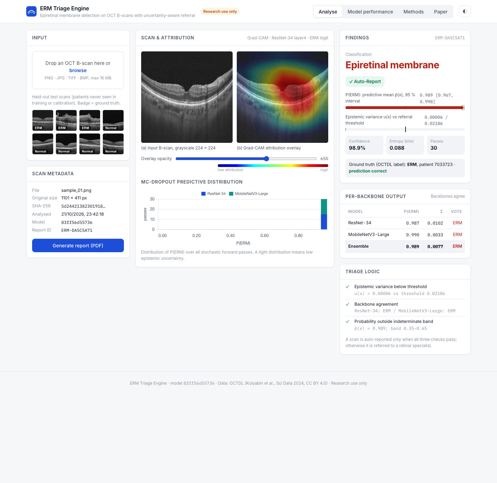
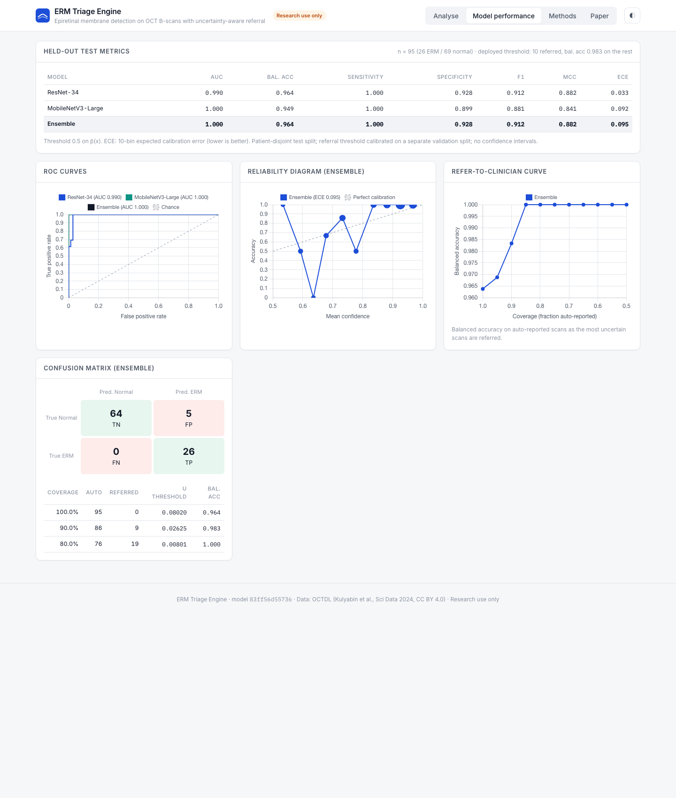
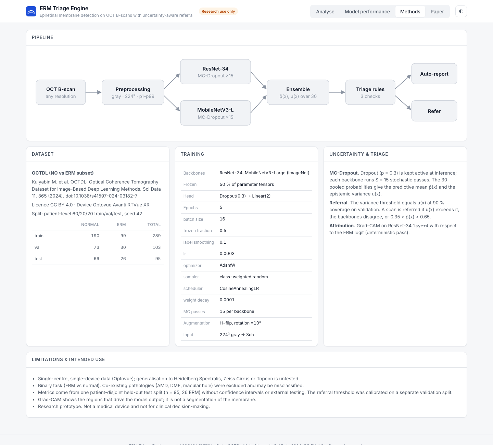
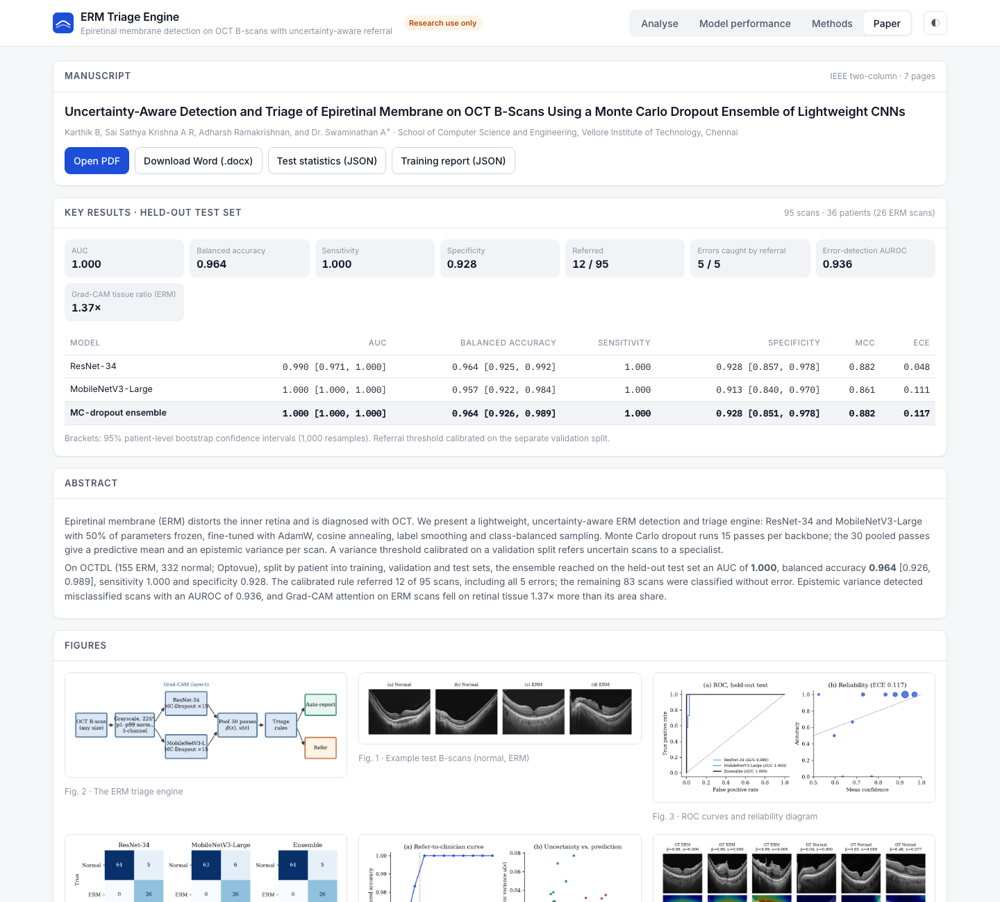

ERM Triage Engine
Epiretinal membrane detection on OCT B-scans that knows when to hand a scan to a specialist. Two lightweight CNNs run Monte Carlo dropout, and the spread of their 30 predictions decides between automatic reporting and referral.
Karthik B, Sai Sathya Krishna A R, Adharsh Ramakrishnan, Dr. Swaminathan A · VIT Chennai

Held-out test results
95 scans from 36 patients that the models never saw. Brackets are 95% patient-level bootstrap intervals.
| Model | AUC | Balanced accuracy | Sensitivity | Specificity | MCC |
|---|---|---|---|---|---|
| ResNet-34 | 0.990 | 0.964 [0.925, 0.992] | 1.000 | 0.928 [0.857, 0.978] | 0.882 |
| MobileNetV3-Large | 1.000 | 0.957 [0.922, 0.984] | 1.000 | 0.913 [0.840, 0.970] | 0.861 |
| MC-dropout ensemble | 1.000 | 0.964 [0.926, 0.989] | 1.000 | 0.928 [0.851, 0.978] | 0.882 |
The referral threshold was set on a separate validation split. On the test split it referred 12 scans, which included all 5 errors, and the remaining 83 were correct.
How it works

- The scan is converted to grayscale, resized to 224 × 224 and normalised between its 1st and 99th intensity percentiles.
- ResNet-34 and MobileNetV3-Large each run 15 forward passes with dropout switched on.
- The 30 probabilities give a mean (the prediction) and a variance (the uncertainty).
- The scan is reported automatically only if the variance is below the calibrated threshold, both models agree, and the probability is outside 0.35 to 0.65.
- Grad-CAM shows which parts of the scan drove the ERM score.
Figures




The app




Limitations
- 26 ERM test scans is a small sample; read the perfect AUC together with the intervals.
- One device (Optovue). Other scanners are untested.
- ERM against normal only; other macular diseases were not in the training data.
Data: OCTDL, Kulyabin et al., Sci. Data 11, 365 (2024), CC BY 4.0.